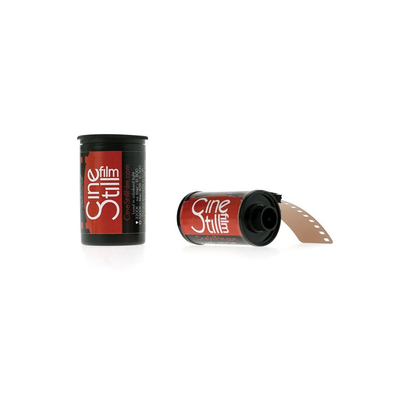
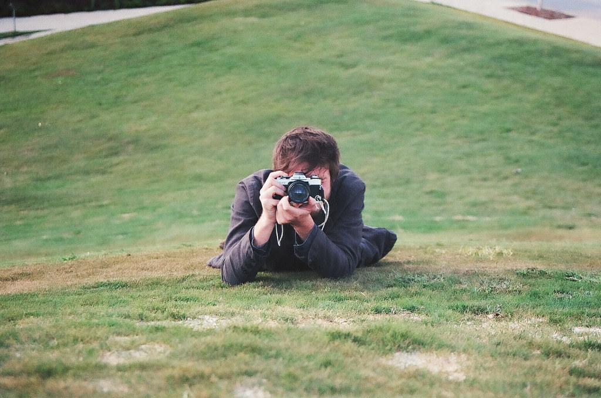

Как фотографировать на плёнку CineStill 800T

Фотоплёнка CineStill 800 Tungsten чудесна, если правильно её экспонировать.
И речь не только про выдержку. У этой фотоплёнки есть один существенный нюанс,
о котором мало говорят.
При съёмке на CineStill 800T используйте розовый фильтр, чтобы привести цветовую
температуру к температуре эмульсии.
Фильтр — это не улучшайзер, это обязательная поправка баланса белого. Эта пленка настроена на ламповый свет, 2800К.
Если ее экспонировать в солнечный день, она будет синить и зеленить, потому что эмульсия пленки с индексом Т
гиперчувствительна к сине-зеленой части спектра, которого не хватает в свете вольфрамовых ламп накаливания.
Чтобы снимать пленкой с индексом Т в дневном свете, нужно:
или использовать корректирующий розовый светофильтр,
который приводит дневной свет к температуре 2800 Кельвинов. Плотность фильтра, отдельная тема, можно погуглить по
слову "миред" или править баланс белого на скане, с некоторой потерей оттенков.
Подобным, же образом, пленка, с индексом Д (дневной свет, 5500 К), будет излишне желтить при съемке с лампами накаливания.
Тут или перебивать вспышкой, или использовать голубой фильтр.